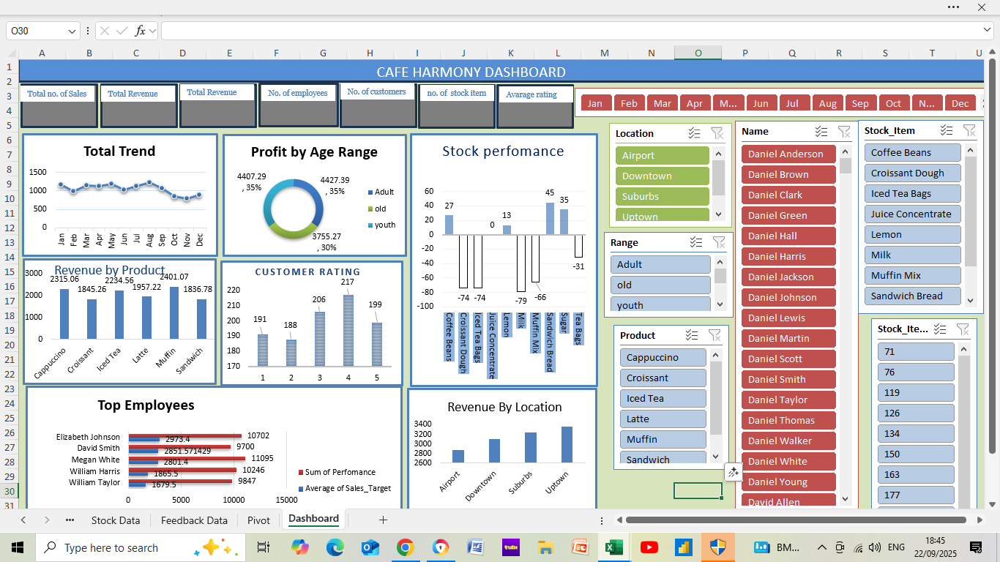
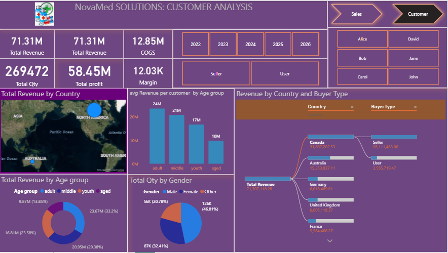
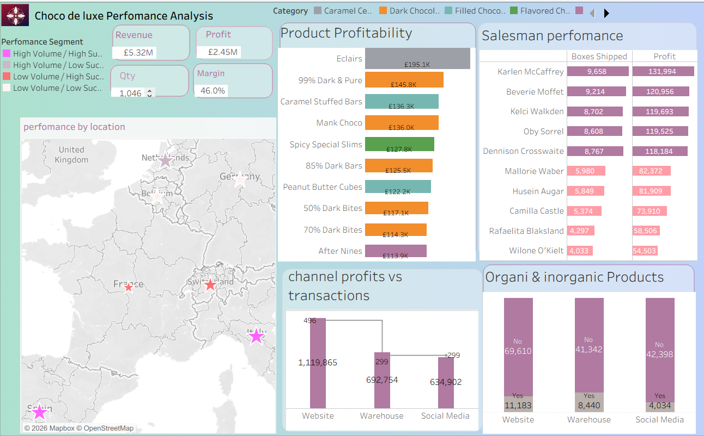
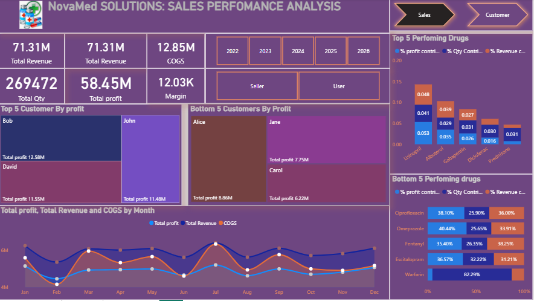

Turning operational data into clear insights, interactive dashboards and practical business decisions.
Explore dashboards covering customer behaviour, sales, profitability and operational performance.




Data cleaning, exploratory analysis, KPI analysis, performance measurement and business insight.
Interactive dashboards, reporting layouts, trend analysis and data storytelling.
SQL queries, data modelling, ETL concepts, data governance and dashboard development.
I am a results-driven professional with experience across data analytics, administrative operations and service delivery. I use SQL, Power BI, Excel and Tableau to transform data into actionable insights, improve reporting and support better decision-making.
My experience also includes data accuracy, compliance, record management and process improvement, giving me a practical understanding of how good data supports day-to-day operations.
Download my CV ↓